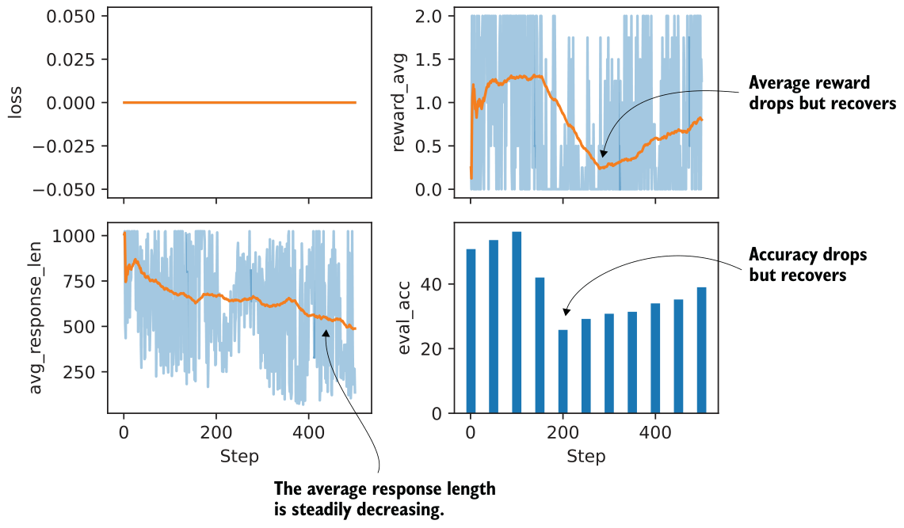
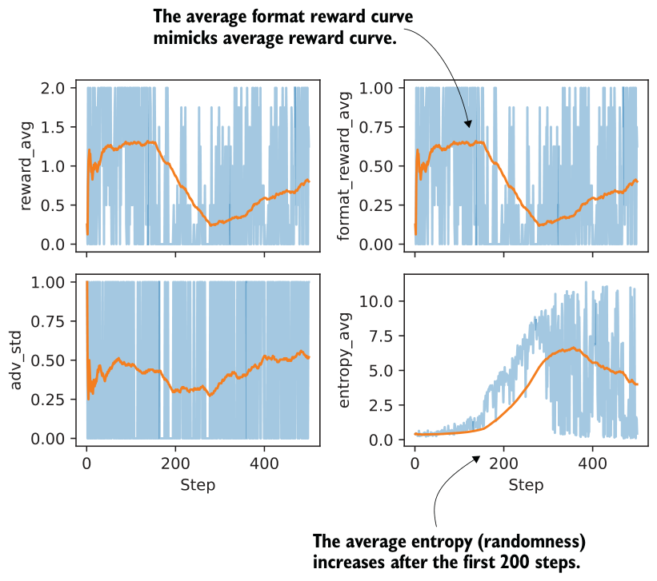

B.5Chapter 6
Exercise 6.1: Adding format-aware reward shaping
We can assign a partial reward (score 0.5) if no "\boxed{}" answer is found, using the fallback="number_then_full" fallback we coded in chapter 3, as follows:
from reasoning_from_scratch.ch03 import (
extract_final_candidate, grade_answer
)
def reward_rlvr(answer_text, ground_truth):
# 1) Try to extract a boxed answer
boxed = extract_final_candidate(
answer_text, fallback=None
)
if boxed:
correct = grade_answer(boxed, ground_truth)
return 1.0 if correct else 0.0
# 2) If no boxed answer is found, look for number
unboxed = extract_final_candidate(
answer_text, fallback="number_then_full"
)
if unboxed:
correct = grade_answer(unboxed, ground_truth)
return 0.5 if correct else 0.0
return 0.0When plugged into the chapter 6 code and trained under the same settings, the partial-reward variant achieves lower accuracy (37.8%) than the standard GRPO setup (47.4%), despite using a similar number of tokens on average, as shown in table B.5.
| Method | Step | Max tokens | Num rollouts | Accuracy | Average tokens | |
|---|---|---|---|---|---|---|
| 1 | GRPO (chapter 6) | 50 | 512 | 8 | 47.4% | 586.11 |
| 2 | GRPO partial rewards (exercise 6.1) | 50 | 512 | 8 | 37.8% | 550.33 |
Exercise 6.2: Zero-advantage cases
If the rewards are all equal (for instance, they are all 0 or all 1), the advantages will all be 0 because subtracting the mean removes the shared reward value and leaves only zeros, as you can see here:
import torch
rollout_rewards = [0., 0., 0., 0.]
rewards = torch.tensor(rollout_rewards)
advantages = (rewards - rewards.mean()) / (rewards.std() + 1e-4)
print(advantages)
This returns tensor([0., 0., 0., 0.]).Similarly, if we change the rollout rewards to rollout_rewards = [0., 0., 0., 0.], we get the same all-zero tensor, tensor([0., 0., 0., 0.]).
rewards are 1, then 𝑟𝑖 - 𝜇𝑖 = 0 for all i rollouts. As a result, the policy gradient is zero, and
In short, if all rewards in a group are identical, for example, all rewards are 0 or all the model parameters are not updated for that prompt.
This behavior is intentional. If all rollouts are equally bad or equally good, there is no relative signal to tell the model which behavior to reinforce or suppress. Intuitively, if the model answers all the questions correctly, there is no need to update it. Conversely, if the model answers all the questions incorrectly, we don’t want to update the model to reinforce that behavior.
B.6Chapter 7
Exercise 7.1: Testing the <think> format reward
The following code checks that the format reward is zero if the <think> tokens are used incorrectly:
from pathlib import Path
import torch
from reasoning_from_scratch.qwen3 import Qwen3Tokenizer
from reasoning_from_scratch.qwen3 import download_qwen3_small
from reasoning_from_scratch.ch07 import reward_formatdownload_qwen3_small(
kind="reasoning", tokenizer_only=True, out_dir="qwen3"
)
tokenizer_path = Path("qwen3") / "tokenizer-reasoning.json"
tokenizer = Qwen3Tokenizer(tokenizer_file_path=tokenizer_path)
prompt = "Calculate ..."
def check_case(name, rollout):
token_ids = tokenizer.encode(prompt + rollout)
prompt_len = len(tokenizer.encode(prompt))
reward = reward_format(
token_ids=torch.tensor(token_ids),
prompt_len=prompt_len,
)
print(f"{name}: {reward}")
# 1) Correct case
check_case(
"Correct order",
"Let's ... <think> ... </think> ..."
)
# 2) Typo in tag
check_case(
"Typo in <think>",
"Let's ... <thnik> ... </think> ..."
)
# 3) Reversed order
check_case(
"Reversed order",
"Let's ... </think> ... <think> ..."
)
# 4) Missing one tag
check_case(
"Missing </think>",
"Let's ... <think> ..."
)The output is as follows, indicating that the function requires correct <think>... </think> tag usage to award a reward of 1.0:
Correct order: 1.0
Typo in <think>: 0.0
Reversed order: 0.0
Missing </think>: 0.0Exercise 7.2: Making the format reward conditional
The implementation of the conditional reward is very simple; in the chapter, we discussed implementing the overall reward as follows:
reward = rlvr_reward + format_reward_weight * format_rewardThis is one way to disable the reward when the correctness reward (rlvr_reward) is 0.0:
if conditional_reward:
format_reward *= rlvr_reward
reward = rlvr_reward + format_reward_weight * format_rewardTo use this in practice, you can run the 7_6_plus_format_reward.py script, which we used in section 7.6, with the --conditional_reward flag enabled.
You can download the log file of this run (using settings similar to those in section 7.6) and plot it as follows:
from reasoning_from_scratch.ch07 import download_from_github
from reasoning_from_scratch.ch07 import plot_grpo_metrics
download_from_github(
"ch07/02_logs/7_6_plus_format_reward_conditional_metrics.csv"
)
plot_grpo_metrics(
"7_6_plus_format_reward_conditional_metrics.csv",
columns=["loss", "reward_avg", "avg_response_len", "eval_acc"],
)
The plots in figure B.1 show that the evaluation accuracy and reward average take a big hit but seem to recover. Overall, despite the performance crash, this looks more stable than before, and the trend indicates that performance would improve further with longer training.
The previous plot focused on the main training metrics. To inspect the effect of the conditional format reward more directly, we can plot additional metrics from the same run:
plot_grpo_metrics(
"7_6_plus_format_reward_conditional_metrics.csv",
columns=["reward_avg", "format_reward_avg", "adv_std", "entropy_avg"],
)
In figure B.2, we see the average format reward mimicking the average reward graph almost perfectly, which is a good sanity check that the conditional logic is working. The average format reward also shows how much of the total reward is coming from the format term on the subset of correct answers.
As we can see, though, since the average format reward graph echoes the average reward one, it’s mainly a bonus. It looks like it’s always awarded if the model is correct; this makes sense because the trained reasoning model already knows how to use <think>...</think> tags correctly, and we can see that it doesn’t unlearn this ability.
The entropy increase is still a bit troubling, though, and could hint at training instabilities that could be addressed by other means (like tighter clipping with smaller
clip_eps).